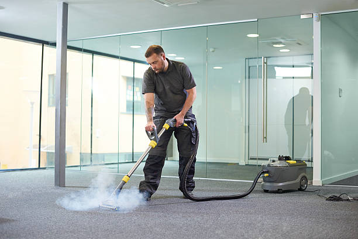
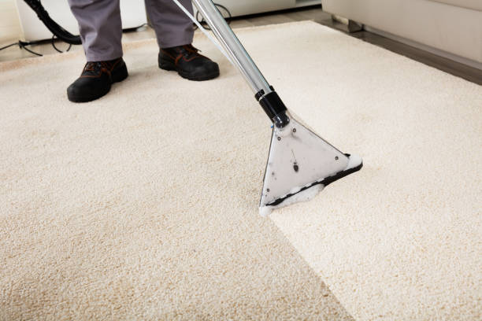

USA - Nationwide
info@usacarpetcleaning.pro
USA - Nationwide
info@usacarpetcleaning.pro

Restore your carpets after water damage with our professional restoration services, addressing stains and odors to bring your carpets back to life .
Overcome water damage with our expert restoration services, designed to revive your carpets and prevent mold formation in Usa - Nationwide.
Residential & commercial Carpet Cleaning
Quality services at affordable prices
Immediate 24/ 7 emergency services


Deep carpet cleaning is essential for maintaining the beauty and longevity of your carpets, especially in a bustling city like Usa - Nationwide. At our company, we understand that carpets can accumulate dirt, allergens, and odors over time, making it vital to invest in a thorough cleaning. Our deep cleaning services utilize advanced methods and eco-friendly products to ensure that your carpets are not only pristine but also safe for your family and pets.
When choosing our deep carpet cleaning services, you are opting for quality, reliability, and expertise. Our trained professionals employ cutting-edge equipment that penetrates deep into the fibers of your carpet, removing embedded dirt and grime that regular vacuuming simply cannot touch. We prioritize customer satisfaction and use methods that are scientifically proven to enhance the cleanliness and appearance of your carpets.
Why should you choose us for your deep carpet cleaning needs? Our commitment to using non-toxic, eco-friendly products means that you can rest easy knowing that your indoor air quality is preserved without compromising on cleanliness. Additionally, our highly-skilled technicians have years of experience, bringing their expertise to every job, ensuring that your carpets receive the highest level of care.
In Usa - Nationwide, where the hustle and bustle can lead to increased wear and tear on your flooring, make the smart choice for your home or office. Schedule a deep carpet cleaning with us today and experience the fresh, new feel of immaculate carpets.

As environmental awareness grows, more customers are seeking eco-friendly carpet cleaning options. At Carpet Cleaning, we are proud to offer sustainable carpet cleaning solutions that are safe for your family, pets, and the planet. Our eco-friendly carpet cleaning uses biodegradable and non-toxic cleaning products that effectively eliminate dirt and stains while preserving the integrity of your carpets. Why should you choose us? Our commitment to sustainability goes beyond just cleaning; we believe in creating a healthier living space without compromising on quality. Our well-trained staff is dedicated to using techniques that reduce water usage and energy consumption, making us your best choice for environmentally friendly carpet cleaning.

As pet lovers, we know that furry friends can sometimes leave behind unwanted stains and odors on your carpets. Our Pet Stain and Odor Removal Services in Usa - Nationwide are specifically designed to tackle the toughest pet messes. Using advanced techniques and products, we effectively eliminate not only visible stains but also the lingering odors that can affect your home’s air quality. Don't let embarrassing pet odors disrupt your space; trust our team to restore the freshness of your carpets. We understand pet owners’ challenges and are committed to providing specialized solutions that ensure your home remains comforting and clean.

Experience the power of heat with our Carpet Steam Cleaning Services in Usa - Nationwide. Steam cleaning is one of the most effective ways to eliminate dirt, dust mites, and bacteria lodged deep within your carpets. Our method uses high-temperature steam to sanitize and rejuvenate your carpets, returning them to their original glory. It’s not just about aesthetics; it's about health. Our skilled technicians thoroughly inspect your carpets before applying our steam cleaning method, ensuring a tailor-made approach for your specific needs. By choosing us, you're investing in a healthier home environment that looks and smells fresh.

If your carpets have seen better days and need a deep cleanse, our carpet shampooing services are the perfect solution. Carpet Cleaning has established a reputable service that employs highly effective shampoo cleaning solutions designed to lift tough stains and revitalize your carpets.
Our shampooing process involves the use of sophisticated machinery combined with high-quality cleaning agents that effectively cut through grease and grime. This method not only cleans but also serves to rejuvenate the natural fibers of your carpets, leaving them soft and fresh. The foam will encapsulate dirt particles and allow them to be effectively extracted, ensuring no residue is left behind.
At Carpet Cleaning, we pride ourselves on delivering reliable and high-quality carpet shampooing services. Our trained technicians focus on customer satisfaction and thoroughness, ensuring that every inch of your carpet is cleaned to perfection. When you choose us in Usa - Nationwide, you can expect nothing less than the best.

Allergens can accumulate in your carpets, triggering discomfort and health issues for sensitive individuals. Our specialized Allergen Removal Services ensure that harmful particles like dust mites, pet dander, and pollen are effectively extracted from your carpets. We utilize advanced filtration and cleaning systems designed to capture and neutralize these allergens, providing relief to allergy sufferers. With our deep cleaning approach, you can create a healthier indoor environment. Choosing us means relying on a dedicated team that prioritizes both cleanliness and your well-being.

Spills and stains are inevitable, but our Spot and Stain Treatment Services in Usa - Nationwide can quickly restore your carpets to their original state. Using specialized cleaning agents and techniques tailored to various types of stains, our expert team effectively targets spots caused by food, drinks, ink, and more. We recognize that time is of the essence when it comes to stains, so we ensure a quick and efficient service that delivers outstanding results. You don’t have to live with unsightly stains; contact us today and let our professionals work their magic on your carpets.

Wall-to-wall carpets provide warmth and aesthetic appeal to any space. However, they also require regular maintenance to keep them looking fresh and clean. At Carpet Cleaning, we provide comprehensive wall-to-wall carpet cleaning services for residents and businesses .
Our thorough cleaning process begins with a meticulous assessment of your carpets, followed by pre-treatment of spots and stains. We utilize hot water extraction methods to penetrate deep into the carpet fibers, lifting out dirt and allergens trapped within. Then, high-powered suction ensures that your carpets will be left clean, dry, and ready for immediate use.
When you choose Carpet Cleaning for wall-to-wall carpet cleaning, you are making a choice towards cleanliness, health, and comfort. Our trained professionals prioritize your needs, ensuring that we exceed your expectations while providing exceptional service . With our expertise, your carpets will regain their vibrancy and life.

Living in an apartment often means smaller spaces but does not mean compromising on cleanliness. At Carpet Cleaning, we specialize in apartment carpet cleaning services designed to cater to the unique challenges presented by urban living in Usa - Nationwide. Our team understands the nuances of cleaning in limited spaces and is equipped to handle every job with precision and care.
Our apartment carpet cleaning services include thorough inspections, tailored cleaning solutions, and efficient execution of the cleaning process, all while respecting your schedule and living environment. We utilize advanced equipment and eco-friendly cleaners to ensure that your carpets receive a deep clean without any inconvenience to you or your neighbors.
When you choose Carpet Cleaning for your apartment carpet cleaning needs, you are selecting a service that values quality, professionalism, and satisfaction. Our goal is to provide carpets that not only look good but also contribute to a healthier living environment for you in Usa - Nationwide.

High-traffic areas in your home or business can quickly show wear and tear. Our high-traffic area carpet restoration service is designed to rejuvenate carpets that have seen better days. We specialize in techniques that target heavy soils and traffic patterns, ensuring that your carpets look their best no matter how busy your space gets. Our restoration process includes thorough cleaning and, if necessary, repair services that can extend the life of your carpets significantly. Trust Carpet Cleaning for expert care in high-traffic zones, as we understand that maintaining appearance is essential for both aesthetics and property value.

A clean office promotes a productive work environment, and at Carpet Cleaning, we provide comprehensive office carpet cleaning services in Usa - Nationwide. We understand that an office's carpets are high-traffic areas, trapping dirt, allergens, and bacteria. Our professional cleaning approach not only enhances the appearance of your office but also contributes to a healthier workplace. We offer flexible scheduling around your office hours, minimizing disruption to your daily operations. Our commitment to using eco-friendly products ensures a safe environment for both your employees and clients. Choose us for your office carpet cleaning needs and see the remarkable difference in cleanliness and professionalism.

In the hospitality industry, the cleanliness of carpets can significantly influence guest perception and satisfaction. At Carpet Cleaning, we provide specialized carpet cleaning services for hotels and hospitality venues ensuring that your establishment always looks its best.
Our experienced team understands the unique challenges presented by hotel environments, such as keeping carpets clean and fresh during high turnover periods. Our services include thorough cleaning of guest rooms, hallways, event spaces, and restaurants using methods that are both effective and gentle on carpets. We employ advanced equipment and environmentally friendly cleaning solutions suitable for high-traffic areas.
When you choose Carpet Cleaning for carpet cleaning at your hospitality venue, you can be confident in our ability to consistently deliver the highest standard of cleanliness. We are dedicated to helping you create a welcoming atmosphere for your guests, solidifying your reputation as a top-tier accommodation provider .

The state of your retail store’s carpets plays an essential role in creating an inviting shopping environment. Carpet Cleaning offers specialized retail store carpet maintenance services to help you maintain a clean and professional appearance that attracts customers.
We understand that high traffic areas in retail require regular maintenance to avoid buildup of dirt and stains. Our team is skilled in identifying problem areas and utilizing effective cleaning methods, from routine vacuuming to deep carpet cleaning, to ensure that your carpets remain in pristine condition. We also offer flexible scheduling options to minimize disruptions to your business operations.
Choosing Carpet Cleaning for your retail carpet maintenance means prioritizing customer experience and satisfaction. We are dedicated to supporting your business by ensuring that cleanliness reflects the quality of your products and services.

Restaurants face unique challenges when it comes to maintaining cleanliness, especially in high-traffic carpeted areas. At Carpet Cleaning, we specialize in restaurant carpet cleaning services in Usa - Nationwide, ensuring that your dining environment remains clean, inviting, and free from unpleasant odors.
Our cleaning process is efficient and thorough, addressing spots, stains, and deep-down dirt effectively. We understand the need for quick turnaround times in the restaurant industry, and our professional team will work diligently to ensure your carpets are cleaned with minimal disruption to your service. We also use high-quality, food-safe cleaning products that are safe for your patrons while effectively removing grease, food residues, and stains.
When you partner with Carpet Cleaning for your restaurant carpet cleaning needs, you can trust that we will maintain the high standards necessary to ensure a welcoming atmosphere for your guests in Usa - Nationwide. Our commitment to excellence and customer satisfaction sets us apart in the industry.

Industrial facilities present unique challenges for maintaining cleanliness, especially in areas with high levels of dirt, dust, and spills. At Carpet Cleaning, we offer industrial carpet cleaning solutions that cater specifically to the needs of businesses .
Our experienced team uses heavy-duty equipment and industrial-grade cleaning solutions to effectively clean carpets in high-demand settings while ensuring minimal disturbance to your operations. We specialize in carpet cleaning for warehouses, factories, and manufacturing plants, offering deep cleaning, stain removal, and odor control services tailored specifically for industrial environments.
When you choose Carpet Cleaning for industrial carpet cleaning, you are investing in a professional service dedicated to quality and efficiency. Our focus is on providing solutions that ensure a clean, healthy workplace while prolonging the life of your carpets .

Event venues host countless gatherings, and the cleanliness of your carpets can significantly impact the visitor experience. Our Event Venue Carpet Cleaning Services are designed with the demands of high-traffic events in mind. We offer thorough cleaning before and after events, ensuring your carpets are pristine for every occasion. Our team is experienced in handling various types of events, from weddings to corporate functions, and we understand the importance of making a great impression. Choose us for reliable service and exceptional results that enhance your venue’s appeal.

Clean carpets in healthcare facilities are paramount to maintaining a safe and hygienic environment. At Carpet Cleaning, we provide specialized healthcare facility carpet cleaning services ensuring that your facility remains compliant with health and safety standards.
Our methods are designed to eliminate dust, allergens, and microbes that can pose a risk to patients and staff alike. We employ EPA-approved cleaning products and high-efficiency particulate air (HEPA) filtration systems to thoroughly clean carpets while reducing chemical exposure. Our team is trained in handling the unique challenges of cleaning carpets in medical offices, hospitals, and clinics.
By choosing Carpet Cleaning for your healthcare carpet cleaning needs, you are ensuring a clean, safe, and welcoming environment for all. Our attention to detail and commitment to excellence makes us the best choice for healthcare facilities.

Maintaining cleanliness in schools and daycares is critical for the health and safety of children. Our School and Daycare Carpet Maintenance Services in Usa - Nationwide focus on providing a safe, clean environment for learning and play. We understand that children are prone to spills and messes, which is why we offer specialized cleaning techniques to remove stains and allergens effectively. Our friendly team is experienced in working around children, and we prioritize the use of non-toxic cleaning products to ensure safety. From classrooms to common areas, count on us to keep your carpets clean, fresh, and safe.

Protecting your carpets from stains and spills is essential for prolonging their life. At Carpet Cleaning, we offer professional carpet protection treatments, such as Scotchgard, . Our protective solutions create a barrier against dirt and spills, making it easier to clean and maintain your carpets. We recommend this treatment not only for new carpets but also for those that are heavily used to enhance longevity and appearance. Our knowledgeable staff will apply the protection carefully, ensuring maximum effectiveness. Choose Carpet Cleaning for carpet protection treatments that keep your investments safe.

Mold and mildew can pose serious health risks, particularly in damp areas where carpets are located. At Carpet Cleaning, we offer specialized carpet mold and mildew removal services in Usa - Nationwide. Our expert team is skilled in identifying mold growth and applying targeted treatments to eliminate it completely. We utilize safe and effective methods that restore your carpets while preventing future growth. If you suspect mold or mildew in your space, it’s crucial to act quickly. Choose us for thorough mold removal and a healthier indoor environment.

If you require a quick and effective carpet cleaning solution, our carpet dry cleaning services are an excellent option. At Carpet Cleaning, we offer dry cleaning services that involve minimal wetness and rapid drying times, ideal for residences and businesses that cannot afford downtime.
Our dry cleaning method uses specialized solvents and techniques to dissolve dirt and stains without soaking your carpets in water. We take care to ensure that no residue is left behind, and many carpets can be walked on shortly after the service is completed.
Choosing Carpet Cleaning means that you will receive exceptional service with fast results. Our team is dedicated to providing you with a cleaner, fresher carpet without the need for long drying times. Experience the convenience and effectiveness of our dry cleaning services in Usa - Nationwide.

Oriental and area rugs require special care and expertise to maintain their beauty and longevity. At Carpet Cleaning, we provide exceptional oriental and area rug cleaning services tailored to the specific needs of your rugs. Our skilled technicians understand the intricacies of different fibers and dyes and apply gentle yet effective cleaning solutions to refresh your rugs without damaging their delicate structure. We treat every rug with care, ensuring that they are cleaned thoroughly and dried properly to prevent any issues. Choose us for specialized rug cleaning services that preserve the integrity and beauty of your valuable rugs.

For high-end homes, only the best will do. Our Luxury Carpet Care Services provide the level of detail and care that your exquisite carpets deserve. We understand that luxury carpets require specialized maintenance and cleaning to preserve their elegance and durability. Our skilled technicians utilize state-of-the-art equipment and the finest cleaning products to ensure your carpets look and feel luxurious. Choose us for a service that reflects your home's sophistication, and experience the unparalleled quality you expect for your luxury carpets.

Transitioning between homes can be stressful, but clean carpets can ease that process. At Carpet Cleaning, we provide move-in/move-out carpet cleaning services that ensure your carpets are impeccable, whether you are leaving a property or preparing to move in. Our thorough cleaning process addresses all aspects, from deep cleaning to spot treatment, ensuring a welcoming environment for new occupants. We understand the importance of securing your rental deposit, which is why our move-out cleaning services are designed to meet stringent landlord standards. Choose us for efficient and reliable move-in/move-out carpet cleaning that helps you start fresh in your new home.
USA - Nationwide Carpet Cleaning Pros
(877) 848-1711
info@usacarpetcleaning.pro
09.00 AM - 09.00 PM
09.00 AM - 12.00 PM